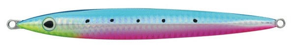
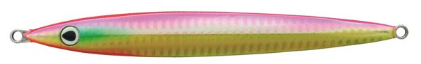
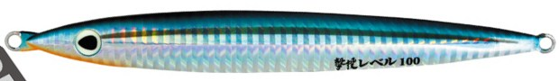
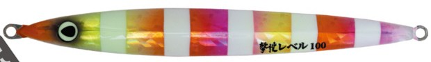

撃投ジグ レベル
（GEKITO JIG LEVEL）
撃投ジグ レベル（GEKITO JIG LEVEL）はCultiva（カルティバ／オーナーばり）のショアジギング用メタルジグです。
タメのきく水平フォールで食わせる、撃投シリーズ第3弾のフロントウェイトジグです。
船のスロージギングで実績のある「スローな操作で使えるジグ」を、岸からでも使えるように作ったモデル。投げるジグなのでタフで、よく飛び、しかも軽快に操作できるのが特徴です。

画像出典:撃投サイト（オーナーばり公式）
スペック
- メーカー
- Cultiva（カルティバ／オーナーばり）
- タイプ
- フロントウェイトジグ
- 重さ
- 30g／40g／50g／60g／80g／100g／130g／180g／230g
- 全長
- 101mm（30g）〜188mm（230g）
- ターゲット
- ブリ・ヒラマサ・カンパチなどの青物、根魚
- 価格
- 1,100円（30g）〜2,050円（180g）（税別）
▼今すぐチェック

撃投ジグ レベルの特徴
ショアから使えるスロー系ジグ。水平フォールの「タメ」で食わせる
-
タメのきく水平フォール
フロントウェイトで、リーダーにかかる水圧を相殺してジグを水平に保つ。フォールでゆっくり見せる「タメ」が作れるので、スローな操作で真価を発揮する。
-
センターキールで細かいローリング
センターキールが、フリーフォール時にピッチの細かいローリングを生み出す。フォール中のアピールで、今まで口を使わなかった魚を引き出す。
-
ショアで使えるタフさと操作性
撃投は「落とすジグ」ではなく「投げるジグ」。磯での酷使に耐える頑丈さと飛距離に加え、小型アイでシルキーなジグ操作ができる。目には強力接着されたグローアイを採用。
撃投ジグ レベルの使い方
基本はキャストして着底させ、ゆっくりめのワンピッチジャークやロングジャークで持ち上げ、水平フォールでじっくり見せる「スロー系」の使い方です。
ジャークのあとはラインを張りすぎず、ジグがヒラヒラと水平に落ちる時間を作るのがコツ。アタリはフォール中に出ることが多いので、ラインの変化に集中しましょう。
撃投ジグ レベルの得意な状況
青物の活性が低い時や、速い動きに反応しない時に出番があります。
30〜60gは堤防からのライトショアジギング、80g以上は磯の青物や根魚狙いと、サイズで幅広い場所に対応します。
ワンポイント
速く動かしても反応が無い時の「食わせの1本」として持っておくと便利。ストライクなど沈みの速いジグで反応が無い時に、レベルに替えてフォールで見せる時間を長くしてみましょう。
レベルのサイズの使い分け
| 重さ | 全長 | 価格（税別） | こんな時に |
|---|---|---|---|
| 30g | 101mm | 1,100円 | 堤防からのライトショアジギング |
| 40g | 110mm | 1,200円 | 堤防・サーフで青物を広く探る時 |
| 50g | 116mm | 1,250円 | 少し深い堤防や潮の速い場所 |
| 60g | 126mm | 1,300円 | 磯や沖堤防の基本サイズ |
| 80g | 137mm | 1,400円 | 磯の青物の定番 |
| 100g | 152mm | 1,550円 | 水深や潮の速さがある磯 |
| 130g | 163mm | 1,800円 | 深場・潮の速い場所 |
| 180g | 184mm | 2,050円 | 激流や大水深の磯 |
| 230g | 188mm | — | 公式のオーナーばりの製品ページは未確認（撃投サイトに掲載） |
※全長は公式のサイズ一覧、価格は公式の希望本体価格（税別）より。
オススメカラー
レベルはサイズごとにカラーが違い、40g・60g・80gなどは30色以上。そのうち4色を紹介します（画像は公式のカラーチャートより）。

03 ブルピン青物の定番ブルピン。まず1本選ぶならこの色。

06 ピンクGピンクの背にゴールドのフラッシング。朝夕マズメや濁り潮に。

35 きびなごいわしキビナゴを意識したナチュラル系。澄み潮の日中に。

41 湾岸ゼブラオレンジ・ピンクのゼブラ柄でシルエットをはっきり見せるアピール系。
画像出典:撃投サイト（オーナーばり公式）
撃投ジグ レベルに似ているルアー
-
 撃投ジグ ストライク
カルティバ
詳細はこちら＞
撃投ジグ ストライク
カルティバ
詳細はこちら＞
同じ撃投シリーズのロングジグ。沈みの速さはシリーズ最速。
-
 フォルテン
ブルーブルー
詳細はこちら＞
フォルテン
ブルーブルー
詳細はこちら＞
フォールで見せるライトショアジギング用ジグ。
-
 ジグパラショート
メジャークラフト
詳細はこちら＞
ジグパラショート
メジャークラフト
詳細はこちら＞
コスパの良い定番ショアジギングジグ。